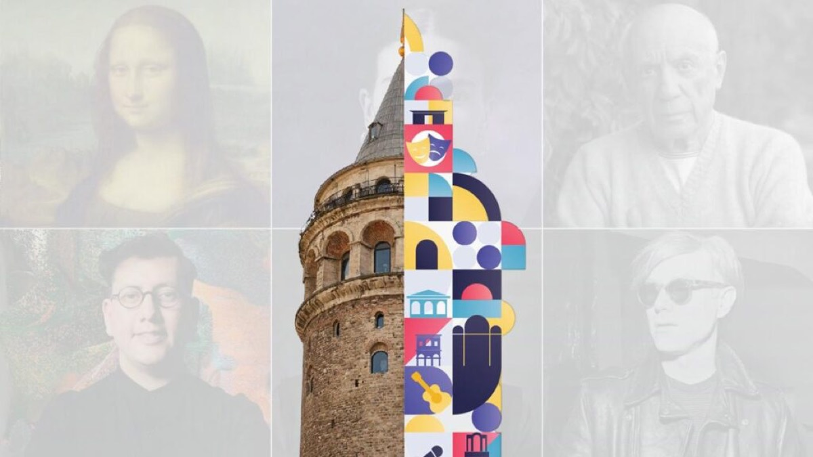

Erdem Beliğ Zaman
Tek mesleği yazarlıktır. Senaryocu, mizahçı ve ödüllü piyes yazarıdır. Keşke Beni de Taşlasa (2024) adlı bir hiciv kitabı vardır.
Yazan Yöneten Aynı Kişi, Oynayan El mi Olsun?
Boğaziçi Üniversitesi’ndeki hazırlık sınıfı günlerimdi… Okulun tiyatro kulübüne alternatif bir grup kurmuş, rektörlüğü ve üniversitenin idarî işleyişini hicveden bir piyes üzerine çalışıyorduk. Oyuna büyük tiyatro…
Erdem Beliğ Zaman · 19 Kasım 2026 · 3 dk okuma
Kültür-Sanat’tan Ne Haber?
Kültür nâmına bizde oluyor güzel şeyler, Galeriye, salona dolar hanımlar beyler… Bir yanda özel sektör, diğer yandaysa devlet, Sponsorluk sunarak eder sanata davet. Paslanmıyor ya altın yıllarca bundan sebep; Verilir…
Erdem Beliğ Zaman · 19 Kasım 2026 · 2 dk okuma

Atatürk’e Aşkla…
Yazımın başlığı, aslında Cumhuriyetin 100. Yaşı münasebetiyle Emre Kınay’ın siparişi üzerine yazdığım bir piyesin adıydı. Bazı aksaklıklar yüzünden piyesim maalesef seyirciyle buluşamadı. Bahsettiğim aşksa her fırsatta…
Erdem Beliğ Zaman · 15 Kasım 2026 · 1 dk okuma
Yeni Bir Sayfa
Geçtiğimiz bahar aylarının sonlarında zihnimde kıvılcımlar çakıyordu… Bunca yıl yazı kulvarında kalem koşturmuştum; neden kendimize ait bir mecramız olmasındı? Kıvılcımlar gün geçtikçe sıklaşıyordu… Sık sık bir araya…
Erdem Beliğ Zaman · 8 Kasım 2026 · 2 dk okuma
Cumhuriyeti Korumaya Var mısınız Yok musunuz?
İmamın biri camide tanrı hakkında vaaz veriyormuş, “Ne yerdedir, ne göktedir; ne sağdadır, ne soldadır…”… O sırada ne hikmetse camide bulunan Bektaşi araya girmiş, “İmam efendi sen yok diyeceksin ama lafı…
Erdem Beliğ Zaman · 29 Ekim 2026 · 2 dk okuma